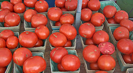

(Re)Thinking Food

awesome, descriptive subhead here
know
- 
story one
this is a one-line description of this story.
story two
this is a another one-line description of this story.
story three
and even one more one-line description of this story.
grow
- story one
- story two
- story three
go
- story one
- story two
- story three